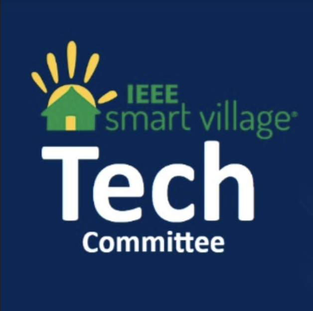

This knowledge base is built primarily for Technology Committee volunteers at the moment — meeting notes, engineering references, and initiative tracking. ISV is made up of other committees as well — regional working groups, subcommittees, and more — which can be explored here. The work of those groups is not reflected here; this site focuses on Tech Comm for now.
- Map and list of ISV-funded solar microgrid programs
- Technology Committee initiatives — OpenAMI, metering, monitoring
- Meeting notes and technical reports from working sessions
- Event planning — e.g. Power Africa Workshop
- Standards, schemas, and open data references
- Open source on GitHub — static site via GitHub Pages
- Tech Comm volunteers and advisors — primary audience today
- Field partners and engineers collaborating on Tech Comm work
- Conference attendees and open-tool contributors (read-only welcome)
- Volunteer signup form
- Browse the funded projects map, meeting notes, and technical reports
- Join the Tech Comm WhatsApp group
- More context and links: Tech Comm Linktree — project map, SunBlazer docs, proposal forms, and related resources
- Want to edit on GitHub? Email Chair Adam Sauer to be added as a repo collaborator (or fork and open a pull request anytime)
Technology Committee initiatives
Volunteer engineering efforts — not PSA-funded field deployments
Side projects by the ISV Technology Committee — open standards, monitoring infrastructure, and tools that make funded microgrids easier to deploy, measure, and integrate.
IEEE Smart Village brings together volunteers across regions and disciplines to fund and support village-scale energy programs worldwide. Beyond the Technology Committee, the program is organized into regional working groups (RWGs) and functional subcommittees listed below.
This wiki is maintained by Tech Comm volunteers for now — reference material, not a working hub for every group. RWGs are typically the first contact for applicants in their region; subcommittees handle project evaluation (PDC), finance, membership, marketing, and related program work. To engage with any of these groups, sign up on the ISV volunteer page.
Regional Working Groups
- North America — Joan Kerr
- Latin America — Mario De La Ossa
- Africa — Abiodun Okunola
- China
- South Asia — Sasi Kottayil
Subcommittees
- Education
- Finance
- Fund Development
- Marketing
- Membership
- Operations
- Project Development (PDC)
- Safety, Quality, Reliability & Standards (SafetyQRS)
IEEE Smart Village integrates sustainable electricity, education, and entrepreneurial solutions to empower off-grid communities worldwide — bringing the world to the village through advanced technology for energy, communications, water, and sanitation.
Every project addresses at least two of ISV's three pillars: Energy (solar-based electricity and micro-utilities), Education (digital classrooms, vocational training, SECI-based adult learning), and Entrepreneurship (community-owned energy businesses). These align with UN SDGs 7, 4, and 8.
The Technology Committee maintains open engineering initiatives — standards, monitoring tools, and interoperability layers — that support funded field projects without replacing them.
Across funded mini-grids, the recurring engineering problems are: metering costs that can double project budgets, inability to bill and detect theft without per-customer meters, protocol fragmentation (STS, DLMS, OEM, MODBUS) below the feeder, and unreliable rural backhaul when DCUs fail. See Technical reports and May 2026 Tech Comm notes.
These are the core ISV mission: in-country NGO and entrepreneur partners running solar micro-utilities under tranche-based project agreements. Each addresses at least two of the three pillars and is tracked on the map below.
Many funded sites use ISV-designed hardware — the SunBlazer community charging station and Portable Battery Kit (PBK) — rather than custom one-off systems. Specs live on the Tech Committee Linktree.
ISV maintains open datasets and schema definitions under permissive licenses. Microgrid topology data follows the OpenAMI GeoJSON schema, enabling third-party tools to parse and visualize community energy systems.
Funded deployment locations live on the Funded projects map (sourced from RemoteMonitorMap). Technical reports and Dev Labs research are indexed in this wiki and hosted on openami-smart-village.
main and GitHub Actions deploys static HTML in about a minute. No wiki server to run; follow-ups use GitHub Issues on the same repo. See README for clone, preview, and PR workflow. To request collaborator access on GitHub, email Tech Comm Chair Adam Sauer at adam.r.sauer@ieee.org.Follow-ups are GitHub Issues on this repo. Browse and filter here; click any task to open it on GitHub.
Loading tasks…
Structured notes from ISV Tech Comm calls. Select a note in the sidebar or below. Background reports and problem framing: Technical reports.
Planning notes for the IEEE Smart Village workshop at the annual PES/IAS Power Africa conference. ISV has run workshops at Power Africa since 2012 — electricity, education, and enterprise for off-grid communities. Official program: ieee-powerafrica.org/isvx. Select a session below.
Compare smart meters, AMI vendors, and microgrid platforms for ISV-funded village deployments. Standards are scored by stack layer (field / edge / cloud), not in a single compliance column. Migrated from the DokuWiki monitor study.
- Affordable metering — legacy prepaid meters at $600–$1,500 can match or exceed generation CAPEX
- Billing & O&M revenue — operators need per-customer reads, disconnect, and anchor load
- Theft & unmetered load — illegal taps and tangled lines hide on aggregate feeders
- Protocol translation — STS, DLMS, OEM, and MODBUS must converge on open schemas (SunSpec, 2030.5)
- Rural comms — redundant paths when DCU / NAN uplinks fail (see meeting notes)
Indexed summaries here; full documents on Cottonspace or in this wiki. The list below comes from technical-notes/catalog.json — a snapshot synced from the openami-smart-village reports index (not fetched live from Cottonspace). Re-run python3 technical-notes/sync-catalog.py after new reports are published, then deploy. There is no query limit; if a tab looks incomplete, the catalog is probably out of date.